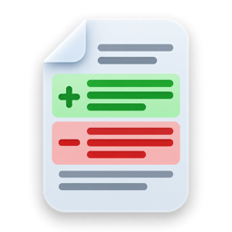
Understand every change.
Then commit it.
Gittan is a free, native git client built around the diff. See what you changed as you change it, who wrote each line and the history behind it, then commit, sync and merge without leaving it.
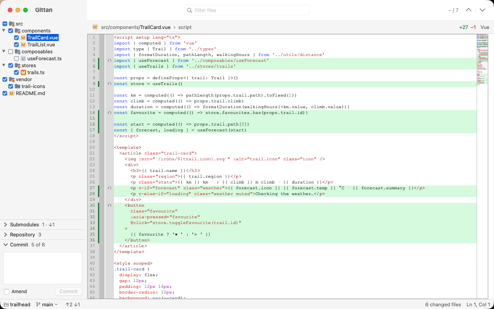
Tour
A closer look
A small Vue and TypeScript project as Gittan shows it: a few changes not committed yet, two commits not pushed, and a submodule that moved on.
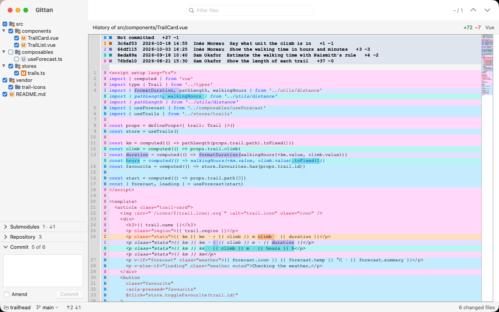
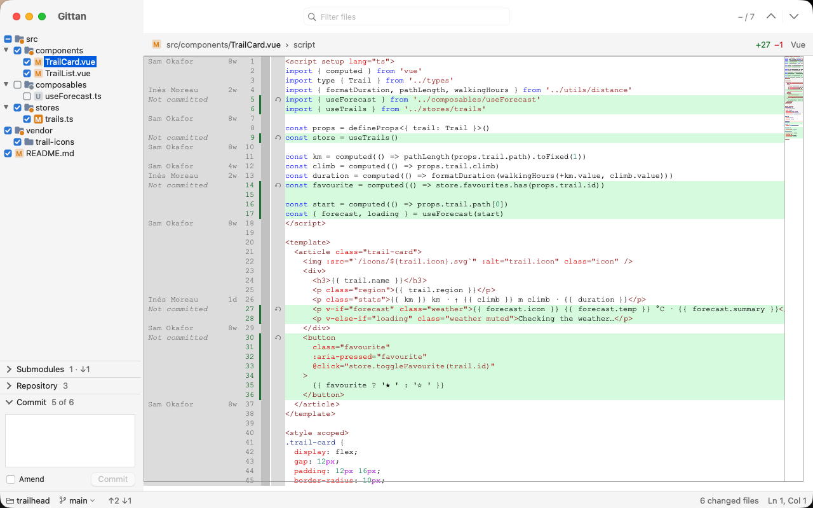
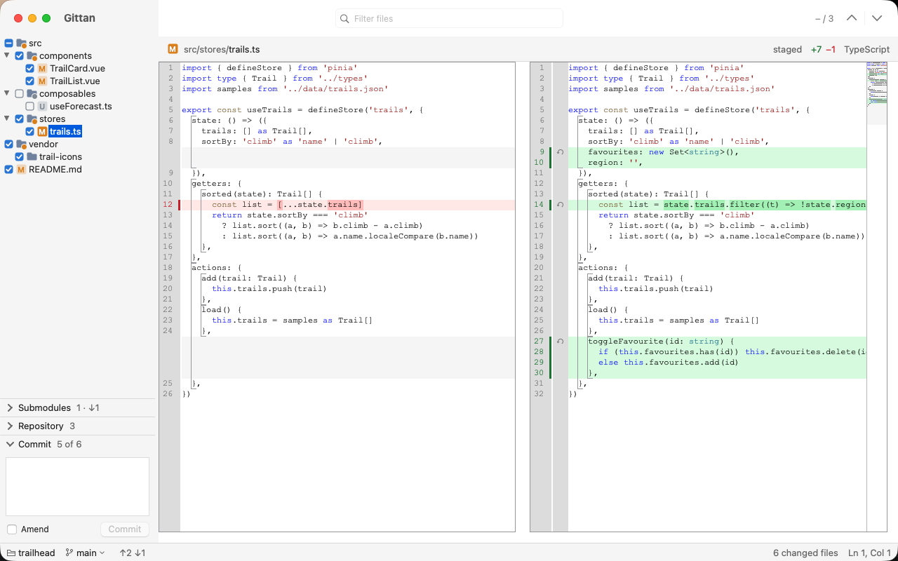
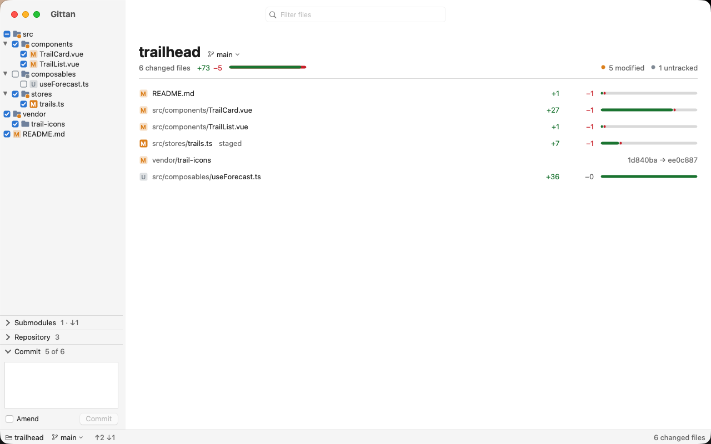
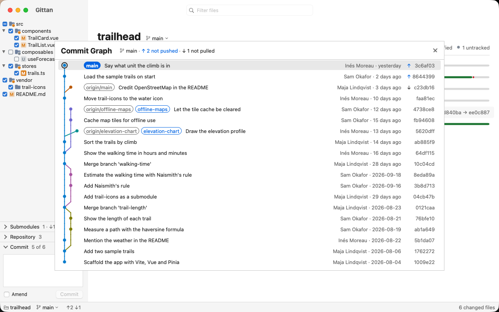
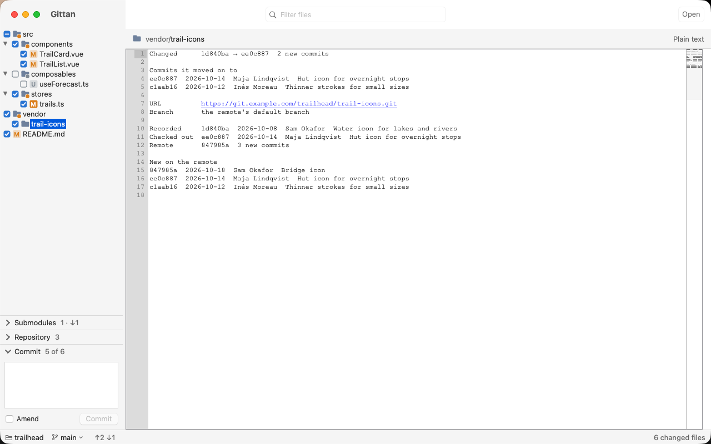
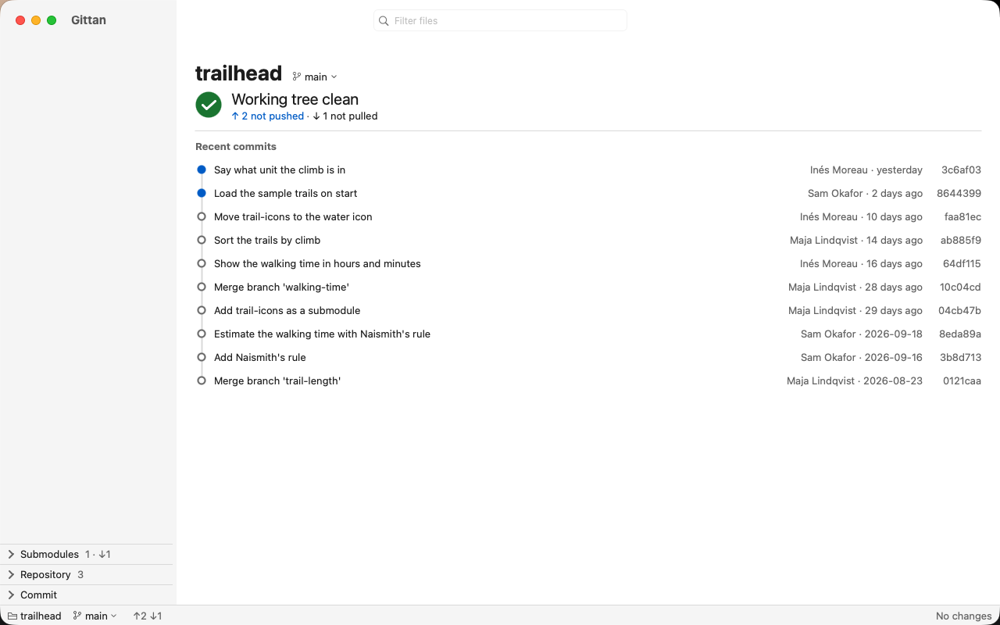
Workflow
Commit, sync and merge
Gittan started as a viewer, and it still puts the diff first. Now the work that follows happens there too. Anything that would throw work away asks first, and nothing gets merged or rebased unless you ask for it.
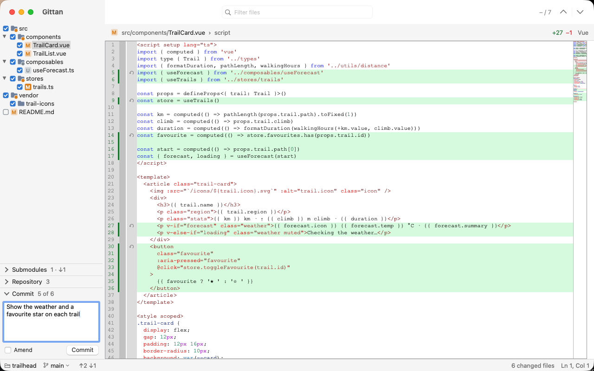
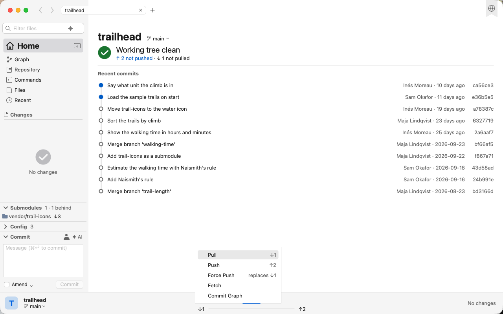
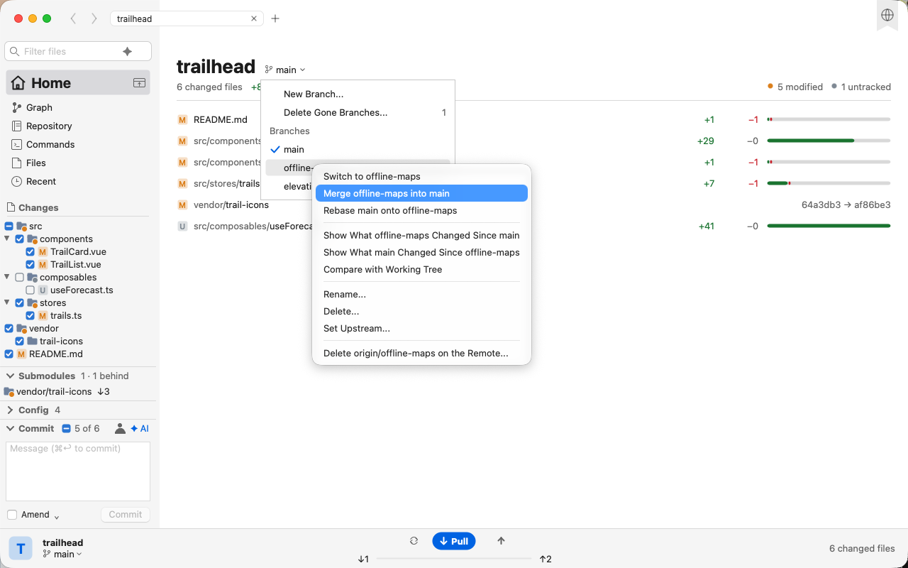
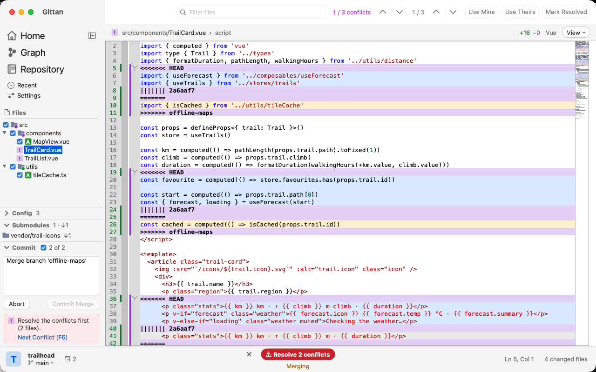
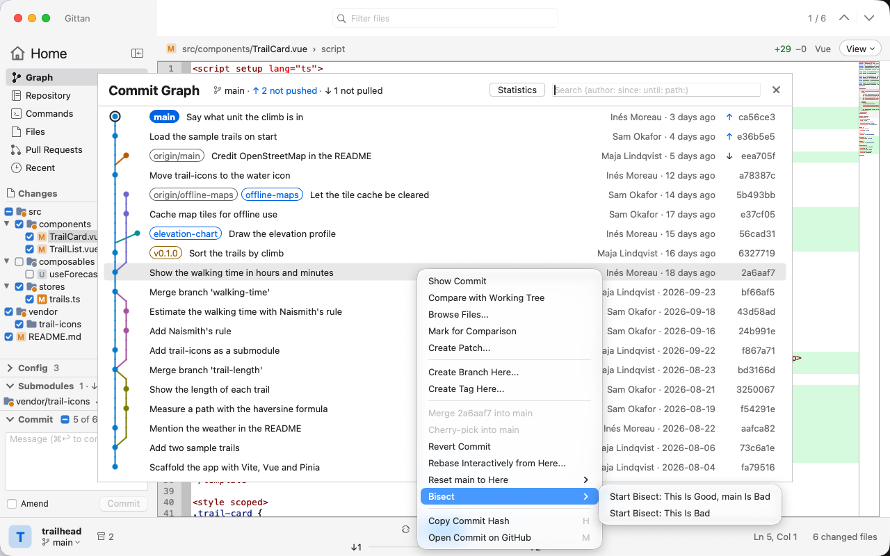
Commit what you see
Every changed file in the tree has a check box. Untick what should wait, write the message at the bottom of the panel and commit with ⌘↩. Files go in as the diff shows them, and your hooks and signing run as git is set up to. Amend picks up the last message.
Pull, push and fetch
⌘⇧L pulls, ⌘⇧P pushes, ⌘⌥F fetches, or click the counts. A pull only fast-forwards unless your git config says otherwise; a branch that went its own way asks Merge or Rebase.
Branches
⌘B switches, the list makes new ones and cleans up the ones whose remote branch is gone. When local changes stand in the way, Gittan names the files and offers Stash and Switch or Bring Changes Along.
Merge and rebase
See what a branch would bring, in either direction, then merge or rebase from that very comparison. A rebase says first when the next push will have to be forced.
Revert, and undo it
Put a file, or every changed file in a folder, back as HEAD has it. Gittan keeps a copy first, so Undo Revert brings your edits back if that was a mistake.
Resolve conflicts
Your side, the base and theirs each get a color. Take one side for a whole file, or one conflict at a time with ⌘⇧R: mine, theirs or both. "Mine" is always your own work, in a rebase too. The last one resolved takes you to the next file, then to Commit or Continue.
From the commit graph
Right-click a commit to branch or tag from it, merge it, cherry-pick or revert it, or reset to it: soft, mixed or hard, with what each keeps spelled out.
Diff
See what changed
The diff is where Gittan starts. It shows the difference between your work tree and any commit, and keeps that view fresh while you edit in whatever editor you like.
Live view
A background thread polls the repository every two seconds. Save a file in your editor and the tree, the counts and the diff update on their own.
Syntax highlighting
Lexers from the CudaText collection, picked by file name. Colors are tuned for both light and dark backgrounds.
Hide unchanged lines
Keep only the changed lines with 1, 3, 5 or 10 lines of context. Click a gap to open it. Highlighting still covers the whole file, so nothing colors wrong.
Side by side or unified
Old on the left, new on the right, scrolled in step, each side numbered from its own file. Or a single view with deleted lines kept in place.
Compare with any ref
Diff against HEAD by default, or pick a branch, a tag, a commit or a snapshot. The tree, the counts and every file diff follow the base you chose.
Knows what is staged
A badge fills as a change gets staged: a tint for none of it, a ring for part, solid for all. The header says "staged" or "partly staged" too.
Dark mode
Follows the desktop theme. On Windows the native tree, menus and dialogs turn dark too, so the whole window matches, not only the editor.
Scroll on to the next file
Keep scrolling at the bottom of a file and the next one pulls in. Step changes with F7, files with F8, or click a row in the summary.
Opens in your editor
Right-click a file to copy its path, reveal it in Finder or the file manager, or open it in your editor. ⌘⌥T opens a terminal. Settings (⌘,) picks both, plus the font and the syntax theme, with a live preview.
Discard a change
A button beside each block of changed lines puts it back the way it is in HEAD, or in the base you compare with. Gittan asks first.
Folding
Fold functions, classes and other blocks the lexer knows, in the file view and in the unified diff.
Images side by side
A changed PNG, JPEG, GIF and the like shows as the two pictures next to each other, at the same scale.
Translations
A gettext .po file shows as its originals on the left and its translations on the right, row for row, with the entries that changed marked. ⌘⌥L switches back to the plain text.
At home on each desktop
The file filter, the change navigator and the actions sit up in the title bar on every platform, and the window keeps the system's shadow and rounded corners.
History
See how it got there
Every line has a past. Gittan reads it from git and lays it next to the code, so you can tell who changed what, when, and why it looks the way it does.
Code History
Put the caret in a function or select a few lines, then ⌘⇧H. Each line gets its earlier versions under it, one color per commit.
Blame
Who last changed each line, and when, beside the code with ⌘⇧B. Click a cell to see that whole commit against its parent.
Compare branches
A branch's menu shows what it changed since it left yours, or what yours changed since it left it. Compare With > Other takes any range, such as v1..v2.
Snapshots
Take a snapshot of the work tree with ⌘⇧N and compare against it later, to see what the last round of edits did without committing anything.
Go to definition
Hover a word to see where it is defined, and jump there with F12. Gittan finds it through the lexer's code tree, with no language server to set up.
Find a symbol
List the symbols of the shown file with ⌘T, or of the whole repository with ⌘⇧T, and type a few letters to get there.
Commit graph
⌘3, or a click on the ahead and behind counts in the status bar, draws the branches with what is not pushed or not pulled yet.
Pull request reviews
With the gh CLI signed in, the status bar shows the branch's pull request and its checks, and the review comments appear under the lines they are about.
Submodules
Every submodule in a section of its own, with the new commits on its remote. Gittan asks again every five minutes without fetching, and marks local branches whose remote branch was deleted.
Download
Get Gittan
Packaged builds for every platform are on the Releases page. Pick the file for your system.
git command line tool, so git must be installed and on your PATH. On Linux it uses GTK 3, which every common desktop already has. The macOS build is signed ad hoc, so macOS blocks it at first: drag it to Applications, then run xattr -cr /Applications/Gittan.app in Terminal. Older builds and release notes are on the Releases page. Every push to main is also built on GitHub Actions, where the artifacts of the newest run are the current development build.
Source
Build from source
Gittan is a Free Pascal application built with Lazarus. The editor (ATSynEdit), the highlighter (EControl), the lexers and MetaDarkStyle are git submodules, so fetch them and register their packages with Lazarus before the first build.
-
Install Lazarus and FPC
Lazarus 5.0 with FPC 3.2.2 or later. On Linux also the GTK 3 headers:
libgtk-3-devon Debian and Ubuntu,gtk3-develon Fedora. On macOS, the Xcode Command Line Tools. -
Clone with the submodules
git clone --recursive https://github.com/slicke/gittan.git cd gittan # Cloned without --recursive, or pulled a submodule change? git submodule update --init --recursive -
Register the vendored packages, once
Lazarus has to know where the packages are. Add them in this order, since each depends on the ones before it.
for p in ATFlatControls/atflatcontrols/atflatcontrols_package.lpk \ EncConv/encconv/encconv_package.lpk \ BGRABitmap/bgrabitmap/bgrabitmappack.lpk \ ATSynEdit/atsynedit/atsynedit_package.lpk \ EControl/econtrol/econtrol_package.lpk \ ATSynEdit_Ex/atsynedit_ex/atsynedit_ex_package.lpk \ metadarkstyle/metadarkstyle.lpk; do lazbuild --add-package-link vendor/$p doneOn Windows run the same
lazbuild --add-package-linkfor each file in PowerShell, or open each.lpkonce in the IDE (Package > Open Package File), which registers it. -
Build and run
make # cocoa on macOS, gtk3 on Linux make run # Windows, where there is no make: .\make.ps1 .\make.ps1 run
- The Makefile finds lazbuild in
/Applications/lazaruson macOS when it is not on PATH;make.ps1looks inC:\lazarusandC:\fpcupdeluxe\lazarus. - Every build copies the lexers from
vendor/CudaText-lexersintolexlib/. A build from the Lazarus IDE does not: runmake lexlibonce. - Already built Gittan before? Register
metadarkstyle.lpktoo; every platform needs it, though only Windows uses it. - On macOS, "malformed method list atom" from the linker means an old ld: update Xcode or the Command Line Tools.
- Details for every platform are in AGENTS.md.